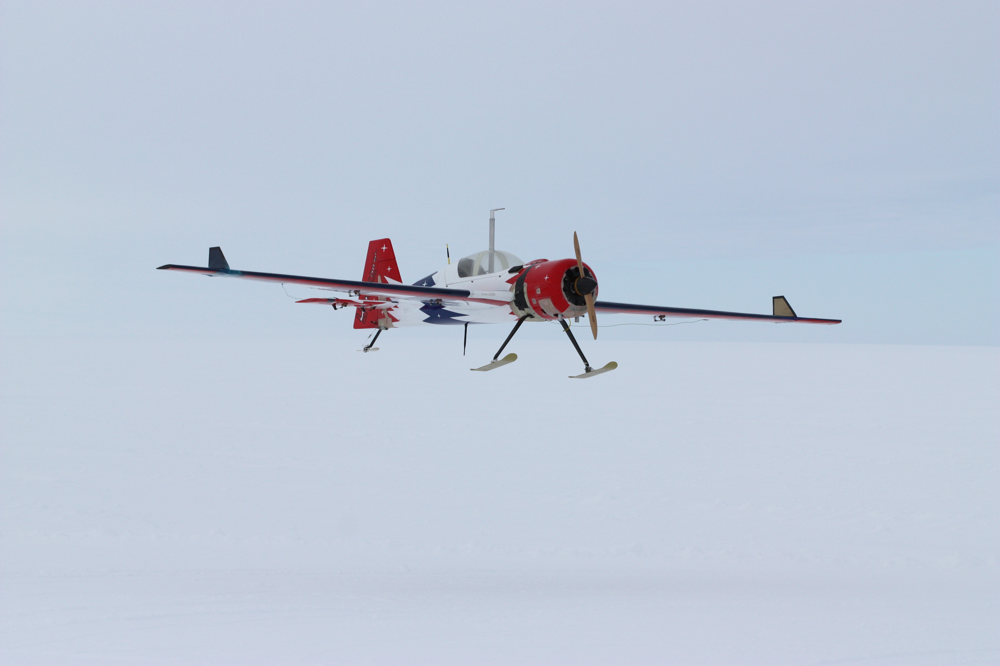
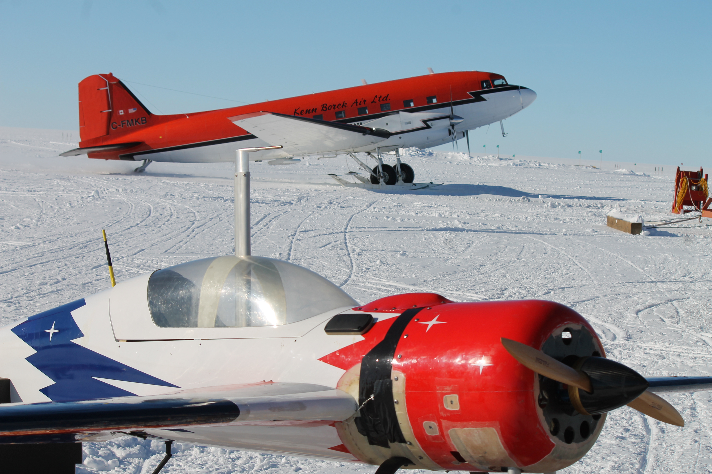

Selected Projects
@: ASL, ETH Zürich | CReSIS, University of Kansas
Autonomous Systems Lab (ASL), ETH Zürich
Drop & Recovery Drones
We developed hardware and algorithms for autonomous, beyond visual line-of-sight (BVLOS), drone-based deployment of low-power, long-term GNSS monitoring stations on the Gorner Glacier, Switzerland, for multi-point, in situ ice motion recording. Funding from armasuisse S+T and the Swiss Polar Institute (SPI).
Sun2Ice: Monitoring Glaciers with Solar-Powered UAVs
Together with glaciologists from the Laboratory of Hydraulics, Hydrology, and Glaciology at ETH Zürich, I organized and lead a glacier monitoring field campaign to Qaanaaq, Greenland (77°N!), resulting in the first-ever autonomous, BVLOS, solar-powered flights of a UAV in a polar region. Funded by the ETH Foundation.
AtlantikSolar: A Perpetual Flight Capable Solar-Powered UAV
I worked with the Fixed-Wing Team at the Autonomous Systems Lab, ETH Zürich, conducting performance optimization and developing automatic take-off, landing, and cruise control design for the AtlantikSolar UAV, resulting in an 81.5 hour endurance world record solar-powered flight for all aircraft below 50kg (blog, paper) and 26 hour, fully autonomous, search and rescue payload equipped flight with passive thermal updraft detection and exploitation (blog, paper).
Adventura AtlantikSolar@Brazil
Worked with SIPAM (Brazilian Amazon Protection Agency) on a real-life disaster relief support mission over the Brazilian Amazon, using the AtlinkSolar UAV. A boat carrying 5000 cattle sunk in the Bacarena Port of the Rio Pará, Belém, Brazil, further spilling 740 tons oil. This was a suprise mission during the Adventura AtlantikSolar@Brazil project, organized together with Swissnex, Brazil.
Flying Backwards(..?!)
Small, long-range, fixed-wing UAVs executing surveying, mapping, or searching missions will inevitably encounter strong and turbulent wind fields, at times reaching to, or even exceeding the aircraft's nominal airspeed. I developed efficient (energetically and computationally) wind-aware guidance logic to allow safe flight in these conditions. (paper,dissertation)
VTOL Tilt-Wing UAV Control
We developed mathematical modeling and controller design for an over-actuated Vertical Take-off and Landing (VTOL) tilt-wing Unmanned Aerial Vehicle (UAV). Performance of the controller is demonstrated in hovering, transitioning, and cruising flight experiments. (paper)
Nonlinear MPC for Fixed-Wing UAVs
Part of my PhD work involved the development of a long-horizon nonlinear model predictive controller (NMPC) for fixed-wing UAVs, considering path following objectives, stall prevention, actuator fault tolerance, wind-awareness, and explicit vision-based terrain feedback. (paper,dissertation)
SenseSoar2: A Solar-Powered UAV for Precision Agriculture
I worked on an ESA funded collaboration between ASL and GAMAYA, the project SOLAR3 led to the development of novel UAV platform, SenseSoar2, equipped with a hyper spectral imaging (HSI) camera for long-range precision farming flights. The SenseSoar2 system has been successfully operated in Ukraine by an internal national drone operator during the 2018-2019 years. SenseSoar2 was additionally utiliized in collaboration with Swiss industry partners Swisscom, INVOLI, and v2sky, where we were able to demonstrate the first networked, BVLOS flight of a UAV in Switzerland, over Lake Neuchâtel.
SHERPA: Search & Rescue Robots
I was a core researcher on the EU FP7 funded SHERPA project; a large-scale research project for mixed ground and aerial robotic platforms to support search and rescue activities in real-world hostile environments such as an alpine scenario. Our contribution included the demonstration of collaborative heterogeneous aerial deployments combining fixed-wing and R-MAX helicopter platforms for distributed environmental mapping and missing person identification. (paper1,paper1).
Center for Remote Sensing of Ice Sheets (CReSIS), University of Kansas, USA
UAV-Based Sounding of Sub-Glacial Bedrock in Antarctica
I embarked on an 8-week deployment with the University of Kansas' Automatic Flight Systems team to Lake Whillans Glacier, Anatarcica resulting in first-ever autonomous glacial bed-rock sounding via a UAV. More info here.
|  |  |
 |
 |
Multi-Agent Avoidance and Formation Control for Fixed-Wing UAVs
During my time as a Masters graduate research assistant in the University of Kansas Aerospace Dept., I conducted research on control and planning for fixed-wing UAVs including multi-agent avoidance and formation strategies (paper1, paper2).